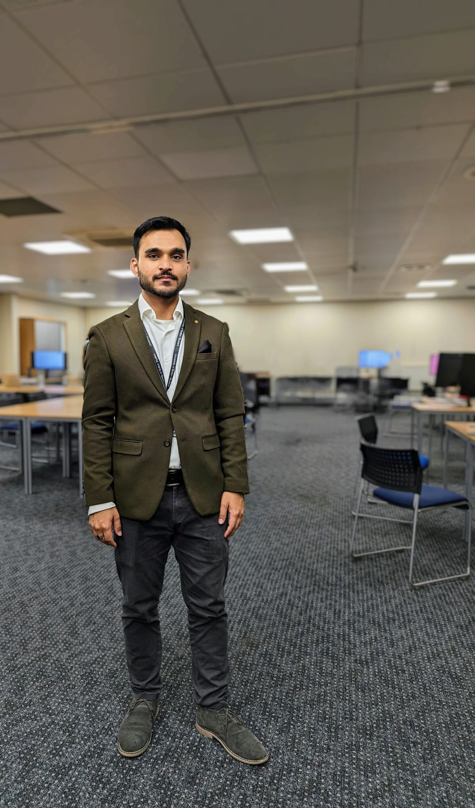

I build computer vision, edge AI and data systems that run in production — from real-time object detection on embedded hardware to data pipelines and published research on intelligent recognition systems.

Three years of professional experience, six since first working in data science — across commercial delivery and academic research.
I'm an AI Software Developer working across computer vision, edge AI, data engineering and automation, with Python as my primary language throughout my career. My work sits where research meets production: taking approaches that exist in papers and making them run reliably on real hardware, at scale, for real businesses.
Currently I lead development of a real-time video analytics platform for a major UK supermarket chain, running object detection on NVIDIA Orin edge devices deployed across retail sites nationwide — optimising models to work within tight memory and compute constraints.
Previously, as a Data Scientist, I delivered projects for commercial customers: unifying customer data across PoS and e-commerce platforms, building ingestion pipelines and change-data-capture flows on AWS, forecasting demand, and designing dashboards that directly informed business decisions. Before that I spent two years freelancing in computer vision and NLP for international clients.
My Master's thesis on enhancing Automatic Licence Plate Recognition was published at ICRITO'2025 and recognised as a Top Project at the University of Bolton.
I'm currently deepening my work in Generative AI, LLMs and RAG systems through NVIDIA and Udemy coursework, and building a RAG-based retrieval system independently.
Education, employment, freelance work and recognition — in sequence.
Coursework spanning software architecture, algorithms, object-oriented design, machine learning and data science — the systems engineering grounding I now apply to automation, edge devices and production AI. Final year project: BlogifyUs, an NLP trend summarisation platform.
Led a team building a network traffic anomaly detection tool inspired by IoT device-to-server communication patterns, using the UNSW-NB15 dataset. Reframed a nine-category attack problem into binary anomaly detection (Normal vs. Attack), handling preprocessing, feature selection and model evaluation on Oracle Analytics Cloud. Placed as finalists among participants across the region.
Advanced study in data science, big data, research methods and solution design. Thesis on enhancing ALPR systems through a novel route-identification algorithm and a custom evaluation metric.
Production systems, data pipelines, published research and independent builds.
Real-time object detection pipeline for a major UK supermarket chain — camera ingestion through detection to automated alerting, replacing manual surveillance nationwide.
Novel "usual route identification" algorithm enhancing ALPR systems to detect cloned vehicles, with a character-wise accuracy metric achieving 96% against an 88% baseline.
U-Net semantic segmentation masking building footprints in satellite imagery for urban analysis. 86.3% validation IoU on the Village Finder dataset.
Re-architected a monolithic cloud platform into independent microservices, with access control and data segregation keeping each customer's data isolated.
Embedded Raspberry Pi application using Python and Kivy, with GPIO hardware control and an auto-restart mechanism for resilience through power loss.
Automated daily pipeline consolidating varied operational source systems into a central warehouse, handling differing structures across system versions.
Consolidated customer records from PoS, WooCommerce, Magento and Shopify into a single customer view, resolving identities via email and phone, then segmented buyers on commercial metrics such as recency and average order value to drive targeted email campaigns.
Set up an AWS SageMaker pipeline capturing MongoDB change data, persisting each change into a database and serving a dashboard that let the operations team track and prioritise work from near-live data.
Built Python ingestion pipelines pulling data from several client sources into a centralised store, standardising formats and scheduling refreshes so downstream analytics stayed current and consistent.
Forecasting model incorporating external variables such as weather to predict demand ahead of time, enabling proactive production scheduling that cut wastage.
Full pipeline from MongoDB through PySpark and Scikit-learn to Power BI, comparing multiple regression and classification approaches on retail data.
Django application crawling trending hashtags, generating abstractive summaries via sequence-to-sequence models and classifying public sentiment.
Vector space model search engine built from scratch — vocabulary extraction, term and document frequency scoring, TF-IDF weighting and relevance ranking.
Transfer learning with VGG-16 and ResNet-18 to classify chest X-rays, extended to multi-label classification distinguishing COVID-19 from pneumonia.
Hackathon finalist project detecting cyber attacks from network traffic patterns using the UNSW-NB15 dataset, reframed as binary anomaly detection.
12th International Conference on Reliability, Infocom Technologies and Optimisation — ICRITO'2025, Noida NCR, India · 18–19 September 2025.
Proposed a novel "usual route identification" algorithm and a character-wise accuracy metric for evaluating Automatic Licence Plate Recognition systems, achieving 96% evaluation accuracy versus 88% with conventional string matching — reducing false penalisation for visually similar character misreadings. Recognised as a Top Project at the University of Bolton.